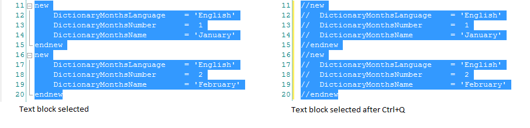

Comments can be used to document what a program does or what a specific block of lines of code do. At its core, a comment is text that is put somewhere for a human to read, that the computer ignores. You can include them anywhere in a GeneXus Object (source sections) without affecting the generated code. There are the following types of comments in GeneXus:
&i += 1 // for single line comments
/* for multi line comments */ As shortcut, you can use Ctrl+Q, Ctrl+Shift+Q to Comment or Uncomment the selected lines of text. 
|
| Backlinks | |
| Commands to include source code in GeneXus | Source Code Editor |